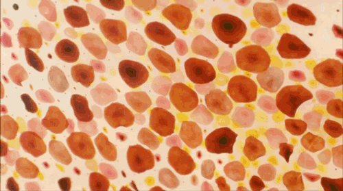
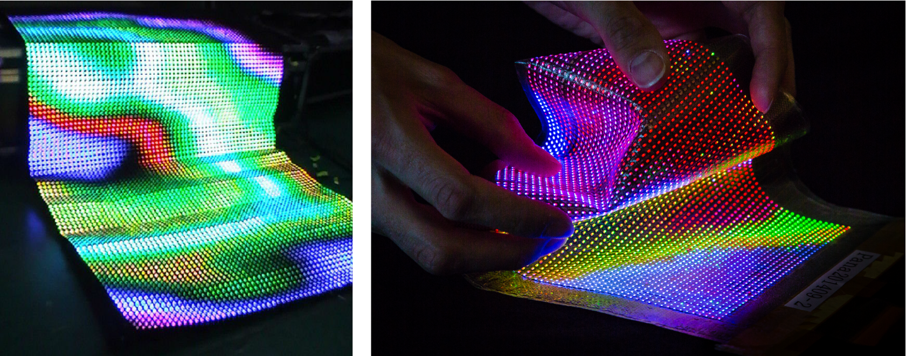
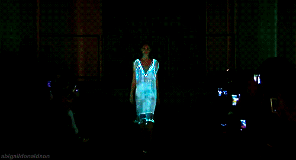

Assignment: Empathy Machine
This week assignment is to create a technical working prototype that allows a human to experience animal senses/locomotion or other animal processes.
Experiments
1. Snake(sense heat and turn it to image) - A thermal camera
Reaseon not to continue: Lack of material
2. Cheetah(speed) - A running machine with velocity(acceleration) detection. When velocity is high, the gif framerate increase and the speed of fan increase(wind)
Reaseon not to continue: fail to make the prototype.

Animal: octopus
Abilities/Characteristic:
1. Circulatory system
Octopuses have a closed circulatory system that keeps blood in their veins. An octopus has three hearts. A heart that circulates blood throughout the body and two branchial hearts that pump blood into each of the gills.
2. Change color/texture to camouflage
They can quickly adjust body color, skin texture and appearance according to the changes, so as to achieve the purpose of camouflage, information exchange or vigilance.
3. Body shape and light-sensitive arm
Octopuses own a totally different body shape from human, which they have eight arms, and each arms has light-sensitive proteins, so that they can sense like without input from the central nervous system.
Camouflage and colour change

Octopuses is an invertebrate animals. The cause of these animals' color change is the morphological change of cells in its skin. They have a layer of pigment cells in their skin, and there are a lot of them. These pigment cells contain pigments that can take on different colors such as red, yellow, brown and black. Under the skin, it has three layer:Chromatophore, Iridophore and Leucophore.The various layers of cells in octopus's skin contribute to its variable body color. The bottom layer is the reflective layer, giving the skin a white undertone. But the mechanism of color change in octopuses is not well understood. These are just a few theories, discoveries and guesses.
Design Concept
What could affect empathy?
light-sensitive(arms)
It's fun to sense lights without seeing it. When users in a blind/blur condition, their arms can feel vibration because of the light sensor can sense the lights.
- Camouflage(skin)
The second elements I think it cound affect empathy is octopuses' changing color abilities. Clothes seem like human skins in somehow. If the color of our clothes can blend into the environment. It will be a cool experience.
Product: Cloak(LED frabric)
